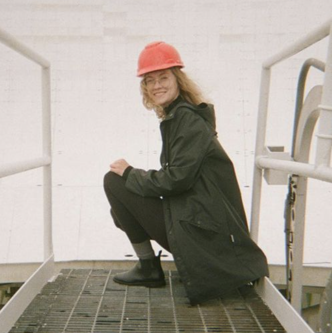

I am a Banting postdoctoral fellow at McGill University and a member of the CHIME/FRB Collaboration. My research interests include fast radio bursts, high-energy follow up, and circumgalactic media, particularly in the context of astrostatistics. I received my PhD in Astrophysics from the University of Toronto in 2025, and an honours BSc in mathematics and physics from McGill University in 2019. As an undergrad I held a variety of summer research positions including at NASA JPL and the University of Kyoto.
